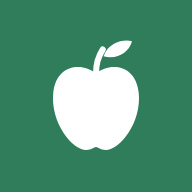
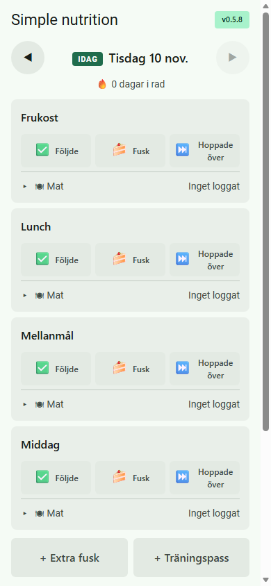
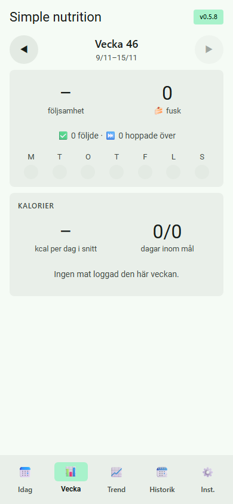

v0.14.3Simple nutrition
Vanor först – kalorier som stöd när du vill. Utan konto, utan reklam, utan ramverk.
Tre principer bakom appen
Ett tydligt fokus
Appen svarar på en enda fråga: äter jag som jag tänkt? Allt annat väljs aktivt bort.
Integritet först
Ingen inloggning, ingen spårning. Data stannar på telefonen, och webbläsaren stänger ute allt som inte är appens eget.
Ren webb
HTML, CSS och vanlig JavaScript. Inga byggsteg – hela appen kan levereras som en enda fil.
Simple nutrition
#2f7d5bVanor först – kalorier som stöd när du vill.
- Ett tryck per måltid: Följde · Fusk · Hoppade över
- Kalorier och makron ur Livsmedelsverkets data
- Egna rätter per portion eller hel sats
- Snabbval när du inte vet exakt – eller din egen uppskattning
- Vikt, träning, vecka och trend över tid
- Krypterad backup, offline, ljust och mörkt tema



Idag · Vecka · Trend – påhittad exempeldata
Egen matdatabas – utan betal-API
- Livsmedelsverkets öppna databas hämtades en gång – 2 606 livsmedel med analyserade värden
- 91 vanliga kärnvaror med 195 butiksvarianter, t.ex. nötfärs 5 / 12 / 20 % fett
- Saknas en variant räknas den fram ur fetthalten – och märks ”beräknad”
- Egna mått: ”1 dl”, ”1 st”, avrunna burkvikter – så du slipper väga allt
- Över 100 rätter räknas om automatiskt vid varje release – mot Livsmedelsverkets rätter och allmänna standardvärden
Rätt sorts data – inte mest data
Analyserat, inte inskrivet
Stora databaser fylls av användare – samma vara finns i tio versioner med olika värden. Livsmedelsverket mäter i labb, och en källa ger ett svar.
Råvaror först
Det mesta vi äter hemma är några få råvaror. 91 kärnvaror täcker vardagen – resten av de 2 606 finns ett tryck bort.
Inbyggt, inte hämtat
All data följer med appen. Ingen sökning skickas ut, inget API kan stängas eller börja kosta, och allt fungerar offline.
Priset: inga märkesvaror eller streckkoder. Därför finns schabloner, egna produkter och AI-tipset på nästa bild.
Fyra nivåer – välj efter läget
- Snabbval – ett tryck. Hemmagjort ≈ 450 / 650 / 850 kcal, utemat ≈ 700 / 1 000 / 1 400. Bättre än att inte logga alls.
- Schabloner – vanliga varor och rätter med ungefärliga mått: ”1 st”, ”1 dl”, ”1 burk avr.”. Ingen våg behövs.
- Skanna med AI – fotografera tallriken eller förpackningen och be AI:n i telefonen, t.ex. Gemini eller Apple Intelligence, om kcal och makron. Skriv in som egen uppskattning.
- Laga själv – väg ingredienserna i en egen rätt. Det exaktaste som finns, och lättare än det låter.
AI-tips: be om protein, kolhydrater och fett också, och nämn portionsstorleken. Studier visar att AI känner igen maten bra men ofta underskattar mängden – se det som ett ungefär. Näringstabellen på en förpackning kan AI:n däremot läsa av rakt av.
En gryta – fem matlådor
Hemlagat är både billigast och lättast att räkna rätt: du vet exakt vad som åkte ner i grytan.
Rätten sparas och återanvänds nästa gång. Ändrar du receptet påverkas inte dagar som redan är loggade.
Att logga slår att logga exakt
- Ofta och jämnt vinnerde som gick ner mest loggade inte längre – de loggade oftare och mer regelbundet. Tiden sjönk från 23 till 15 minuter om dagen. (Harvey m.fl., Obesity 2019)
- Självövervakning fungerar22 studier visar genomgående samband mellan att följa sin mat och viktnedgång. (Burke m.fl., J Am Diet Assoc 2011)
- En app räcker inte ensampatienter som fick en stor kaloriapp gick inte ner mer än andra – de flesta slutade använda den inom ett halvår. (Laing m.fl., Annals of Internal Medicine 2014)
- Det som glöms bort är största feletanvändare missar i snitt var femte sak de äter, oftast det energitäta. Databasen spelar mindre roll.
- Förenklat kan räckaen liten pilotstudie fick lika stor viktnedgång med att bara bocka av vissa livsmedel som med full loggning. Lovande, inte bevisat. (Patel m.fl., JMIR 2022)
Ingen studie har jämfört just den här appen. Men den är byggd på det forskningen säger spelar roll: enkelt nog att orka varje dag.
Kärnan finns – resten är tillval
Störst effekt får de som följer sin mat och kombinerar det med mål, återkoppling eller uppföljning. (Michie m.fl., Health Psychology 2009: 122 studier, 44 747 personer)
| Forskningen | I appen |
|---|---|
| Följa maten | Måltider, vanor, kalorier, träning |
| Mål | Följsamhetsgräns, kalorimål, träningsmål |
| Återkoppling | Vecka, Trend och Historik med kurvor |
| Uppföljning av målen | Följsamhet 7 och 30 dagar, 🔥 dagar i rad |
| Väga sig ofta | Vägningar och viktkurva (VanWormer m.fl. 2008: 11 av 12 studier) |
Skanning eller snabbval?
Streckkodsskanning har inte visats ge bättre resultat – den gör bara loggningen snabbare, och bara för förpackningar. Snabbval tar ett tryck för vilken måltid som helst, även restaurangmat. Förpackningen löser AI:n genom att läsa av näringstabellen, sparad som egen produkt en gång – sedan ett tryck under Senaste.
Ärligt: två saker hjälper och saknas – påminnelser att logga och stöd från en människa. Ta gärna hjälp av en vän eller coach; det hjälper mer än någon app.
Så får du bäst förutsättningar
- Logga varje dag – hellre ett snabbval än inget. Det är regelbundenheten som räknas.
- Logga direkt – efter måltiden, inte på kvällen. Då glöms mindre bort.
- Glöm inte småsakerna – dryck, sås, smör och godis är det som oftast faller bort.
- Laga i satser – en vägd gryta i matlådor ger exakta värden hela veckan med ett tryck per lunch.
- Följ trenden, inte dagen – väg dig några gånger i veckan och titta på Trend. En enskild dag säger lite.
- Börja enkelt – vanor först, kalorier när du vill veta mer. Det du orkar med länge slår det perfekta.
Från gratis data till appen
Ärligt: standardvärdena i testerna är allmänna uppskattningar, inte mätningar. Livsmedelsverkets färdiga rätter är det oberoende facit.
Allt i telefonen – kopplat med referenser
l: Livsmedelsverket, b: beräknad variant.foods egna produkter → u:
dishes egna rätter → r:
log dag → poster som pekar på en vara eller rätt
goals, weights, meals, vanor och träning
Hög nivå – och det är testat
| Test | Rätter | Resultat |
|---|---|---|
| Vardagsrätter mot standardvärden | 30 | alla inom ±5 % |
| Bredare mix: wok, sallader, frukost, husmanskost | 61 | 54 inom ±10 % · summa −2 % |
| En hel dag (4 måltider) | 4 | 2 348 mot 2 316 kcal · +1,4 % |
| Mot Livsmedelsverkets färdiga rätter | 10 | alla inom ±20 %* |
Exempel, chili con carne: standardvärde 412 kcal · vår databas 413 kcal per portion. * Vattnet som kokar bort finns i den färdiga rätten men inte i receptets råvikt.
Mot betaltjänster för kaloriräkning
| Simple nutrition | Typisk betaltjänst | |
|---|---|---|
| Datakälla | En officiell källa, labbanalyserad | Stor databas, ofta användarinlagd |
| Råvaror och hemlagat | I nivå – testat inom ±5–10 % | Bra, men samma vara i många versioner |
| Märkesvaror och streckkod | Saknas – lägg in egen produkt | Bättre |
| Integritet | Bättre – inget konto, all data på telefonen | Konto i molnet |
| Kostnad | Gratis, ingen reklam | Månadsavgift |
Jämfört mot Livsmedelsverket och allmänna standardvärden – inte mot betaltjänsternas egna databaser.
Säkerhetstestad
Automatiska tester körs före varje commit och push. Underkänt test = ingen release.
Säkerhetskontroll
- Bara appens egen kod körswebbläsaren blockerar allt annat, även om någon försöker smyga in något.
- Inget lämnar telefonenappen pratar aldrig med någon server.
- Din data stannar hos digsparas bara i telefonen; appen rör bara sina egna uppgifter.
- Fungerar utan nätmed bara appens egna filer – inget hämtas utifrån i smyg.
- Låst backupbara ditt lösenord öppnar filen – samma typ av kryptering som banker använder. Lösenordet finns aldrig i filen – bara i telefonen, om du vill.
Funktionstester
- Trasiga filer stoppasen backup från fel app, eller som någon ändrat i, läses inte in.
- Inget innehåll kan bli kodallt visas som vanlig text, även konstiga namn.
- Export och importbackup tur och retur ger samma data; styrtecken rensas.
- Matdatanöver 100 rätter räknas om mot facit vid varje release.
När känslig data läcker
Verkliga intrång hos stora tjänster som sparar samma sorts data som de här apparna. Vilka bolagen var spelar mindre roll – det är datan som gör ont.
Kaloriapp · 2018
En av världens största kaloriappar tappade 150 miljoner konton: e-post, användarnamn och lösenord – nyckeln till dagboken med vikt och mat.
Terapijournaler · 2020
En psykoterapiklinik hackades. Anteckningar om oro och mående från tiotusentals samtal läckte, och patienterna utpressades en och en.
Hela ekonomin · 2017
Hos en kreditupplysningsfirma kom angripare åt personnummer, adresser och kreditdata för nära 150 miljoner människor.
Barnens uppgifter · 2024
En skolplattform hackades. Namn, adresser och i vissa fall hälsouppgifter för tiotals miljoner elever kom ut.
Gemensamt: datan låg samlad på en server. I de här apparna finns ingen sådan server.
Det som säljs – utan intrång
Läckor är olyckor. Det här är inte det – det är så många appar tjänar pengar. Alla fall ledde till böter eller förlikning hos amerikanska myndigheter.
Mens och graviditet
En mensapp delade användarnas uppgifter om mens och graviditet med annons- och analysföretag – trots löfte om motsatsen.
Psykisk hälsa
En terapitjänst på nätet skickade svar om användarnas mående till sociala medier, för riktad reklam.
Mediciner
En recepttjänst delade vilka läkemedel och diagnoser användarna hade med stora annonsplattformar.
Varje köp
Bankkopplade budgettjänster kan sälja transaktioner – var du handlar och vad du tjänar – avidentifierade, till investerare och analysföretag.
Är du bekväm med att din vikt, din oro eller din lön blir en vara? De här apparna har inget att sälja: inget konto, ingen server, ingen analys.
Ingen server – inget att stjäla
Känslig data läcker oftast på två sätt: ett företags databas hackas, eller företaget säljer och delar den. En budgetapp vet allt om din ekonomi, en hälsoapp din vikt, en familjeapp dina barns namn.
Ingen databas att hacka
Vanliga appar samlar miljontals användare på ett ställe – ett drömmål för hackare. Här finns datan bara i din telefon.
Inget att sälja
Inget konto, ingen analys, ingen reklam. Webbläsaren spärrar anrop ut, så datan kan inte skickas iväg – ens av misstag.
Låst även i molnet
Backupen krypteras med AES-256 och ditt lösenord innan den lämnar telefonen. Molntjänsten ser bara obegriplig data.
Ärligt: inget är 100 % säkert – lås telefonen, håll den uppdaterad och välj ett starkt lösenord. Men utan server finns inget centralt att stjäla.
Ett lösenord från start – sedan ett tryck
Ingen inloggning, bara nyckeln till dina backup-filer. Ingen server kan rädda datan, så backupen är din livlina.
Därför från start
Valt från början blir backup ett enda tryck – telefonen kommer ihåg lösenordet. Har du redan en backup läser du in den i stället.
Låt appen välja
16 slumpade tecken tar längre tid att gissa än universum funnits, även med 1 000 grafikkort. Sommar2024! faller på en dag.
Ny telefon
Spara backup-fil med ett tryck, med påminnelse varje månad. På nya telefonen: läs in filen, skriv lösenordet och tryck Ersätt.
Spara lösenordet
Det finns aldrig i filen. Utan det öppnas backupen inte – inte ens av utvecklaren. Lägg det i din lösenordshanterare.
Krypteringen skyddar filen när den lämnar telefonen. I telefonen skyddar skärmlåset.
Material Design 3, byggd för mobilen
Färg via roller
Nyckelfärgen styr allt. Ljust och mörkt tema följer telefonen. Nästan kantigt och tätt.
Bottenmeny för tummen · tryckytor ≥ 48 px · systemtypsnitt
Samma struktur, varje gång
index.html styles.css app.js store.js version.js sw.js docs/ SPEC · MANUAL · presentation tools/ tester · bygge dist/ testfil med allt inbakat
- SPEC först – idé, mål, icke-mål
- Säkerhet: förhandsprövning före bygget, efterkontroll före push
- Release kör kontroll och alla tester – underkänt stoppar
- Det som blir bättre här förs in i alla appar
Installera på 30 sekunder
- Öppna adressen i Chrome på mobilen:
flyinggooner.github.io/simple-nutrition - Tryck på ⋮ och välj Installera app. På iPhone: Dela → Lägg till på hemskärmen.
- Öppna appen från hemskärmen. Den startar i eget fönster.
Enkelt för användaren.
Genomtänkt bakom kulisserna.
Rena råvaror, dina vanor och din data – bara i din telefon.